Rube Goldberg Simulation : CS296 Group 25 Project Report
Anmol Garg 110050020 anmolgarg@cse.iitb.ac.in
Anshul Purohit 110050002 anshulp@cse.iitb.ac.in
Introduction
This report presents our original design and finished design for the Rube Goldberg Machine \cite{RG} and describes its features.It begins by stating the deviations from our original and finished design. We have analysed our code for the simulation through the timing and profiling experiments.
Then it also compares the profiles generated by gprof for two different compiling modes. Gprof \cite{GProf} is a inbuilt profiler in Linux. A profiler identifies the portion of code that takes large time which can be then optimized. The profiler also generates a call graph showing the callee-caller relationship which is breifly explained at the end.
Analysis of Plots using matplotlib \cite{plot}
The first step of plotting involved generating data for iterations ranging from 1-100. For each iteration the script was rerun 100 times to generate sufficient data for analysis. The graphs plotted were as follows
Average Step Time & Average Loop Time Vs Iteration Values
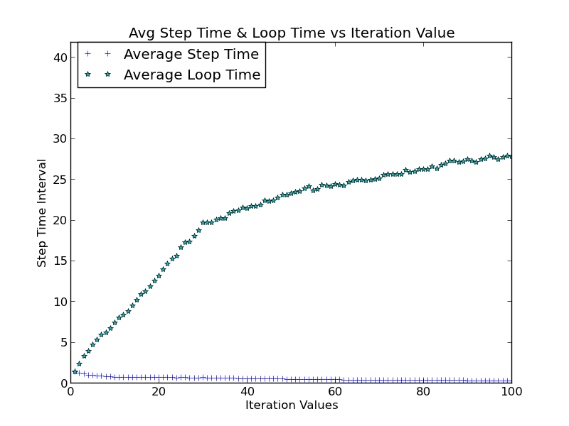
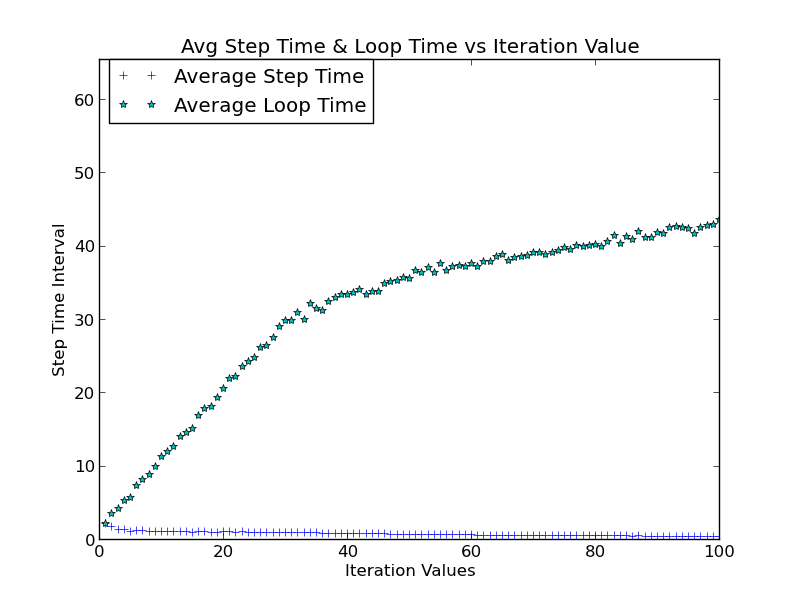
This is a plot between the Average Step time and Average Loop Time (average with respect to the number of reruns) against the iteration number.
We observe that the avg step time per iteration slightly decreases as the number of iterations increase. This could be because computation for larger iterations are done efficiently using values from previous iterations. The Avg loop time increases with the iterations. This is so because more time would be taken for more iterations. However the increase in loop time decreases with the iterations because of the decreasing trend of the step time. Ave Step time * Iterations turns out to be approximately equal to the loop time for all the runs. This shows the consistency between the b2Profile timers and the gettimeofday function.
The above was the case when system was normally loaded. When the system is heavily loaded, the nature of the plots is similar but they are shifted vertically upwards, as it takes more amount of time for the system to execute the same process. This is probably because the slightly lower priority is given for scheduling of this process as compared to the the heavy ones. Also make plot02 target takes a lot more time to generate plots.
Average Collision Time , Velocity & Position Updates Vs Iteration Values
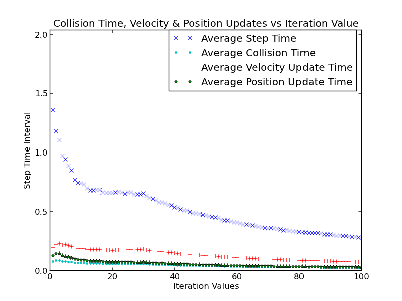
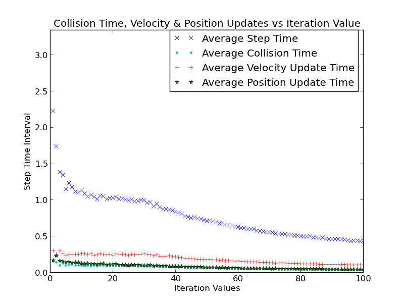
The collision time , velocity updates , and position updates (all average with respect to reruns) also form a decreasing trend with respect to iterations. This is quite similar to the trend in avg step time. We observe that avg collision time, avg velocity & position updates are all less that the avg step time, in fact even their sum is slightly less than step time. Thus we can infer that there are still other events apart from collision, velocity & position updates that occur in each step. This analysis was for for the normally loaded system.
Plotting the same, when the system is heavily loaded only results in a plot with a similar trend but upward shifted. The system takes more time for the same when heavily loaded.
Average Step Time & Average Loop Time Vs Rerun Values
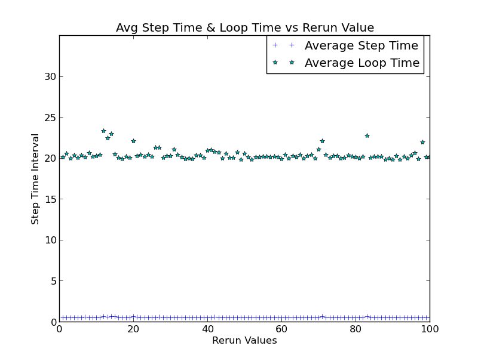
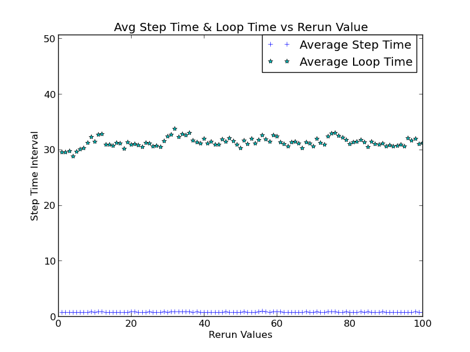
The third plot is of Average Step time and Average Loop Time (average with respect to the number of iterations) against the rerun number. They show very less variation with reruns and are almost constant throughout. This shows the Step Time and Loop time don't depend on the number of reruns for any number of iterations and return almost the same value.
On plotting the above on a heavily loaded system , the same inference can be drawn. However the avg step time and avg loop time increases, due to high priority given to the heavy processes.
Average Collision Time , Velocity & Position Updates Vs Iteration Values
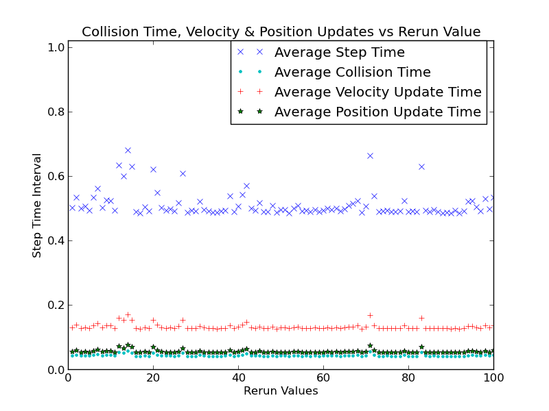
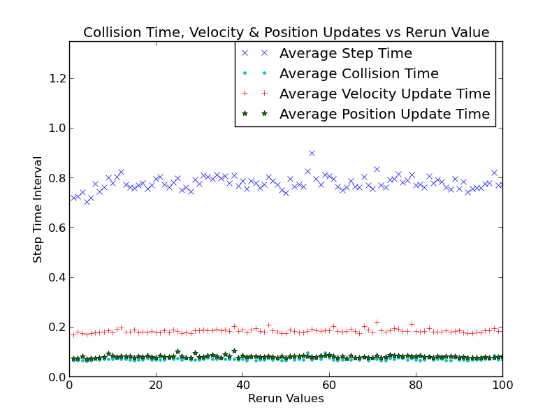
This plot is of collision time , velocity updates , and position updates (all average with respect to the number of iterations) against the rerun number. The plot is nearly constant for all the three. Showing that there values don't change on running the code again.
On plotting with heavily loaded system, all the three increase but remain constant similar to the previous case.
Step Time (with error-bars) Vs Iteration Values
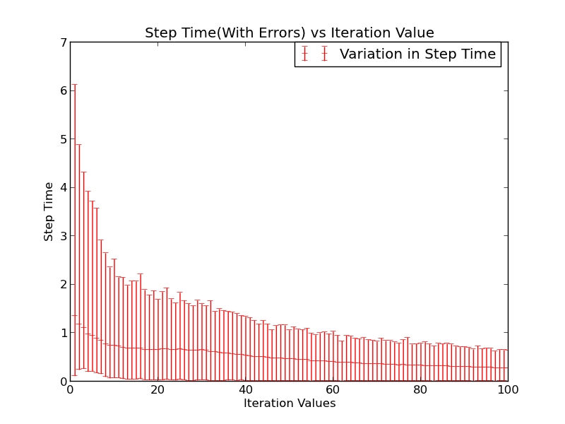
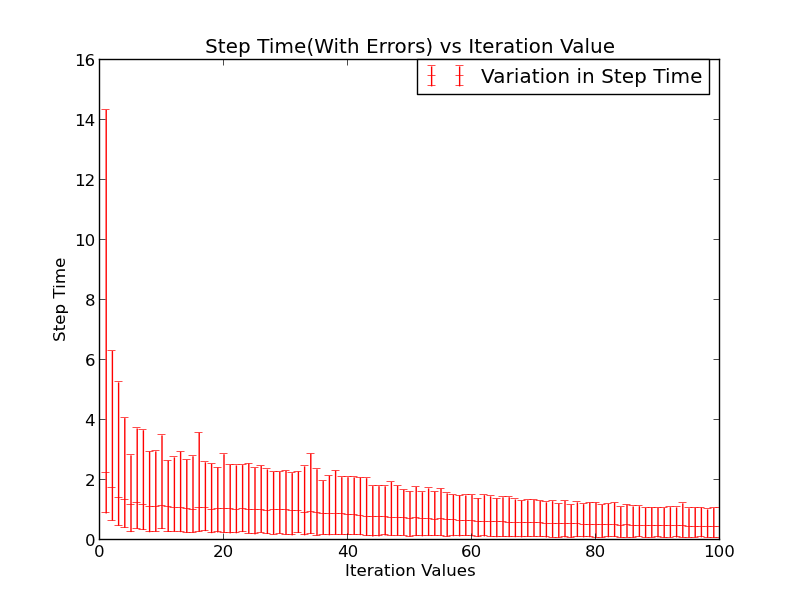
This is a plot of avg step time (with error bars) with the iterations. The step time follows a decreasing trend with iterations, as observed earlier. From this plot, it is observed that the error in the avg step time decreases as the iterations progress. Relative error slightly decreases. Thus we get a good approximate for the average step time for larger number of iterations. Thus there should exist sufficient number of iterations in the computation to obtain the less variation in step time.
Only difference for a heavily loaded system,is that graph is only scaled and follows the same trend.
Step Time frequency & cumulative frequency plot (for a fixed iteration value)
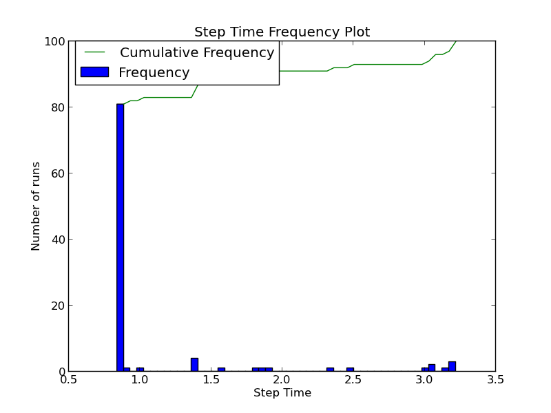
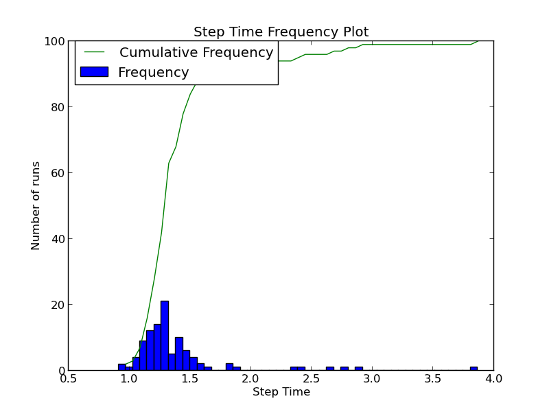
This is a plot of frequency & cumulative frequency distribution of step time (wrt no of reruns keeping iterations fixed). For the case of normally loaded system, the histogram has a random distribution(mostly uniform).There is not much difference between the number of reruns for any intervals. The cumulative frequency distribution is plotted accordingly and is an increasing function.
For a heavily loaded system, the histogram is approximately follows the normal distribution. Maximum number of reruns occurs for an intermediate middle value. This is because of the resource constarints of processor and memory.